pacman::p_load(sf, tmap, tidyverse, spdep, sfdep, dplyr, tidyr)Take-Home Exercise 3: Prototyping Modules for Geospatial Analytics Shiny Application
1.0 Overview
1.1 Objectives
To evaluate and determine the necessary R packages needed for your Shiny application are supported in R CRAN,
To prepare and test the specific R codes can be run and returned the correct output as expected,
To determine the parameters and outputs that will be exposed on the Shiny applications, and
To select the appropriate Shiny UI components for exposing the parameters determine above.
1.2 Focus
The focus within this Take-Home Exercise, as part of the group project, would be our geographical and aspatial target on:
districts within East Malaysia (Sabah, Sarawak, W.P Labuan)
- [Profile of East Malaysia](https://www.mavcom.my/en/industry/public-service-obligations/profile-of-east-malaysia/#:~:text=East%20Malaysia%20(consisting%20of%20the,by%20the%20South%20China%20Sea.)
category: assault
type: rape
We will be discovering the rape trends that take place within the districts of East Malaysia, across the years 2020-2023, discovering the emerging hot spots and cold spots, outliers, as well as determine the spatial autocorrelation within these districts.
1.3 Prototyping for Shiny Application
2.0 Load packages
sf
tmap
tidyverse
spdep
sfdep
dplyr
tidyr
3.0 Importing Data and Data Wrangling
3.1 Raw Data
- geospatial
msia_adm2 <- st_read(dsn = 'data/geospatial/', layer = 'mys_admbnda_adm2_unhcr_20210211')Reading layer `mys_admbnda_adm2_unhcr_20210211' from data source
`C:\marcus159260\IS415-GAA\take-home_exercises\take-home_ex03\data\geospatial'
using driver `ESRI Shapefile'
Simple feature collection with 144 features and 14 fields
Geometry type: MULTIPOLYGON
Dimension: XY
Bounding box: xmin: 99.64072 ymin: 0.855001 xmax: 119.2697 ymax: 7.380556
Geodetic CRS: WGS 84# msia_adm2_shp <- st_read(dsn = 'data/geospatial/mys_admbnda_adm1_unhcr_20210211.shp')- aspatial
msia_sf <- read_csv('data/aspatial/crime_district.csv')Rows: 19152 Columns: 6
── Column specification ────────────────────────────────────────────────────────
Delimiter: ","
chr (4): state, district, category, type
dbl (1): crimes
date (1): date
ℹ Use `spec()` to retrieve the full column specification for this data.
ℹ Specify the column types or set `show_col_types = FALSE` to quiet this message.3.2 Geospatial Wrangling
plot(msia_adm2["ADM2_EN"])
Upon plotting out the shapefile of Admin level 2, we can see that it takes both East and West Malaysia. However, we only want East Malaysia (Sabah, Sarawak).
unique(msia_adm2$ADM1_EN) [1] "Johor" "Kedah" "Kelantan"
[4] "W.P. Kuala Lumpur" "W.P. Labuan" "Melaka"
[7] "Negeri Sembilan" "Pahang" "Perak"
[10] "Perlis" "Pulau Pinang" "Sabah"
[13] "Sarawak" "Terengganu" "W.P. Putrajaya"
[16] "Selangor" We will convert all to lowercase and do necessary trimming for appropriate left-join later to combine with our working data.
msia_adm2 <- msia_adm2 %>%
mutate(ADM1_EN = str_to_lower(ADM1_EN),
ADM1_EN = str_trim(ADM1_EN)) %>%
mutate(ADM2_EN = str_to_lower(ADM2_EN),
ADM2_EN = str_trim(ADM2_EN)) Now, we separate East Malaysia, only filtering “sabah”, “sarawak”, “w.p. labuan” regions. We will select only the necessary columns: ADM1_EN, ADM2_EN, geometry.
msia_adm2_east <- msia_adm2 %>%
filter(ADM1_EN %in% c("sabah", "sarawak", "w.p. labuan")) %>%
select("ADM1_EN", "ADM2_EN", "geometry")
msia_adm2_eastSimple feature collection with 57 features and 2 fields
Geometry type: MULTIPOLYGON
Dimension: XY
Bounding box: xmin: 109.5379 ymin: 0.855001 xmax: 119.2697 ymax: 7.380556
Geodetic CRS: WGS 84
First 10 features:
ADM1_EN ADM2_EN geometry
1 w.p. labuan w.p. labuan MULTIPOLYGON (((115.2528 5....
2 sabah beaufort MULTIPOLYGON (((115.58 5.21...
3 sabah beluran MULTIPOLYGON (((117.7142 6....
4 sabah keningau MULTIPOLYGON (((116.0938 4....
5 sabah kinabatangan MULTIPOLYGON (((119.2474 5....
6 sabah kota belud MULTIPOLYGON (((116.61 6.66...
7 sabah kota kinabalu MULTIPOLYGON (((116.3009 5....
8 sabah kota marudu MULTIPOLYGON (((116.3408 6....
9 sabah kuala penyu MULTIPOLYGON (((115.3682 5....
10 sabah kudat MULTIPOLYGON (((116.6292 6....Now, when we plot back, we can see that only East Malaysia polygon shapes are filtered.
plot(msia_adm2_east)
3 states, 57 districts
unique(msia_adm2_east$ADM1_EN)[1] "w.p. labuan" "sabah" "sarawak" unique(msia_adm2_east$ADM2_EN) [1] "w.p. labuan" "beaufort" "beluran" "keningau"
[5] "kinabatangan" "kota belud" "kota kinabalu" "kota marudu"
[9] "kuala penyu" "kudat" "kunak" "lahad datu"
[13] "nabawan" "papar" "penampang" "pitas"
[17] "putatan" "ranau" "sandakan" "semporna"
[21] "sipitang" "tambunan" "tawau" "tenom"
[25] "tongod" "tuaran" "asajaya" "bau"
[29] "belaga" "betong" "bintulu" "dalat"
[33] "daro" "julau" "kanowit" "kapit"
[37] "kuching" "lawas" "limbang" "lubok antu"
[41] "lundu" "marudi" "matu" "meradong"
[45] "miri" "mukah" "pakan" "samarahan"
[49] "saratok" "sarikei" "selangau" "serian"
[53] "sibu" "simunjan" "song" "sri aman"
[57] "tatau" 3.3 Aspatial Wrangling
- Likewise, we do filtering and wrangling on the state and district, category: assault and type: rape.
First, we see the columns and rows available in sf using glimpse.
glimpse(msia_sf)Rows: 19,152
Columns: 6
$ state <chr> "Malaysia", "Malaysia", "Malaysia", "Malaysia", "Malaysia", "…
$ district <chr> "All", "All", "All", "All", "All", "All", "All", "All", "All"…
$ category <chr> "assault", "assault", "assault", "assault", "assault", "assau…
$ type <chr> "all", "all", "all", "all", "all", "all", "all", "all", "caus…
$ date <date> 2016-01-01, 2017-01-01, 2018-01-01, 2019-01-01, 2020-01-01, …
$ crimes <dbl> 22327, 21366, 16902, 16489, 13279, 11495, 10348, 10453, 5531,…msia_sf <- msia_sf %>%
mutate(state = str_to_lower(state),
state = str_trim(state)) %>%
mutate(district = str_to_lower(district),
district = str_trim(district)) Now, we separate East Malaysia, only filtering “sabah” and “sarawak” regions. We will select only the necessary columns: ADM1_EN, ADM2_EN, geometry.
msia_sf_east <- msia_sf %>%
filter(state %in% c("sabah", "sarawak"),
category == "assault") %>%
filter(type != "all")
msia_sf_east# A tibble: 2,800 × 6
state district category type date crimes
<chr> <chr> <chr> <chr> <date> <dbl>
1 sabah all assault causing_injury 2016-01-01 213
2 sabah all assault causing_injury 2017-01-01 230
3 sabah all assault causing_injury 2018-01-01 216
4 sabah all assault causing_injury 2019-01-01 221
5 sabah all assault causing_injury 2020-01-01 176
6 sabah all assault causing_injury 2021-01-01 148
7 sabah all assault causing_injury 2022-01-01 169
8 sabah all assault causing_injury 2023-01-01 176
9 sabah all assault murder 2016-01-01 60
10 sabah all assault murder 2017-01-01 36
# ℹ 2,790 more rowsunique(msia_sf_east$type)[1] "causing_injury" "murder" "rape"
[4] "robbery_gang_armed" "robbery_gang_unarmed" "robbery_solo_armed"
[7] "robbery_solo_unarmed"We see that we do not need the “all” results for districts and we need to do a sorting by their date of occurrence in ascending order.
msia_sf_east <- msia_sf_east %>%
filter(year(ymd(date)) >= 2020 & year(ymd(date)) <= 2023) %>%
filter(district != "all") %>%
arrange(date) Dealing with Inconsistencies and mispelled districts
“kota kinabatangan” in
msia_sf_east$districtshould be “kinabatangan” as inmsia_adm2_east$ADM2_EN.- rename “kota kinbatangan” to “kinabatangan” in
msia_sf_east$district
- rename “kota kinbatangan” to “kinabatangan” in
“matu daro” in
msia_sf_east$districtmight represent two separate districts: “matu” and “daro” inmsia_adm2_east$ADM2_EN.- will split first half of the (matu daro) rows take matu, second half take daro, impute with the average of the crimes of matu daro rows in
msia_sf_east$district
- will split first half of the (matu daro) rows take matu, second half take daro, impute with the average of the crimes of matu daro rows in
“padawan” in
msia_sf_east$districtdoes not appear inmsia_adm2_east$ADM2_EN, as Padawan is often categorized within “kuching” but may need verification as a separate district.- follow shapefile, so we rename “padawan” in
msia_sf_east$districtto”kuching”
- follow shapefile, so we rename “padawan” in
“w.p. labuan” appears in
msia_sf_east$districtbut is not listed inmsia_adm2_east$ADM2_EN, which could be due to handling federal territories separately.- Update “w.p. labuan” as a separate state and district in
msia_sf_east$district
- Update “w.p. labuan” as a separate state and district in
“kota samarahan” in
msia_sf_east$districtshould be “samarahan” as inmsia_adm2_east$ADM2_EN.- rename “kota samarahan” to “samarahan” in
msia_sf_east$district
- rename “kota samarahan” to “samarahan” in
msia_sf_east_dealt <- msia_sf_east %>%
mutate(district = gsub("^kota kinabatangan$", "kinabatangan", district), # Rename "kota kinbatangan" to "kinabatangan"
district = gsub("^padawan$", "kuching", district),
district = gsub("^kota samarahan$", "samarahan", district)) %>% #rename "padawan" to "kuching"
# Update "w.p. labuan" as a separate state and district
mutate(
state = if_else(state == "sabah" & district == "w.p. labuan", "w.p. labuan", state),
district = if_else(state == "w.p. labuan" & district == "w.p. labuan", "w.p. labuan", district)
)- impute average for matu daro, and split matu and daro
split_matu_daro <- function(data) {
# Filter rows for "matu daro"
matu_daro_data <- data %>%
filter(district == "matu daro")
print(matu_daro_data)
# Calculate the average crimes for "matu" and "daro" from all entries
total_crimes <- sum(matu_daro_data$crimes) # Total crimes
num_entries <- nrow(matu_daro_data) # Number of entries
# Average for both "matu" and "daro"
average_crime <- round(total_crimes / num_entries) # Round to nearest whole number
print(average_crime)
# Calculate midpoint for splitting the data
midpoint <- ceiling(num_entries / 2) # Use ceiling to handle odd numbers
# Create new entries for "matu" and "daro"
new_entries <- bind_rows(
mutate(matu_daro_data[1:midpoint, ], district = "matu", crimes = average_crime), # First half for "matu"
mutate(matu_daro_data[(midpoint + 1):num_entries, ], district = "daro", crimes = average_crime) # Second half for "daro"
)
# Print new entries for debugging
print(new_entries)
return(new_entries)
}
matu_daro_split <- split_matu_daro(msia_sf_east_dealt)# A tibble: 28 × 6
state district category type date crimes
<chr> <chr> <chr> <chr> <date> <dbl>
1 sarawak matu daro assault causing_injury 2020-01-01 0
2 sarawak matu daro assault murder 2020-01-01 0
3 sarawak matu daro assault rape 2020-01-01 1
4 sarawak matu daro assault robbery_gang_armed 2020-01-01 0
5 sarawak matu daro assault robbery_gang_unarmed 2020-01-01 0
6 sarawak matu daro assault robbery_solo_armed 2020-01-01 0
7 sarawak matu daro assault robbery_solo_unarmed 2020-01-01 0
8 sarawak matu daro assault causing_injury 2021-01-01 0
9 sarawak matu daro assault murder 2021-01-01 0
10 sarawak matu daro assault rape 2021-01-01 1
# ℹ 18 more rows
[1] 0
# A tibble: 28 × 6
state district category type date crimes
<chr> <chr> <chr> <chr> <date> <dbl>
1 sarawak matu assault causing_injury 2020-01-01 0
2 sarawak matu assault murder 2020-01-01 0
3 sarawak matu assault rape 2020-01-01 0
4 sarawak matu assault robbery_gang_armed 2020-01-01 0
5 sarawak matu assault robbery_gang_unarmed 2020-01-01 0
6 sarawak matu assault robbery_solo_armed 2020-01-01 0
7 sarawak matu assault robbery_solo_unarmed 2020-01-01 0
8 sarawak matu assault causing_injury 2021-01-01 0
9 sarawak matu assault murder 2021-01-01 0
10 sarawak matu assault rape 2021-01-01 0
# ℹ 18 more rows# Combine the new entries with the existing data, removing old "matu daro" entries
msia_sf_east_final <- msia_sf_east_dealt %>%
filter(district != "matu daro") %>%
bind_rows(matu_daro_split)3 states, 48 districts
unique(msia_sf_east_final$state)[1] "sabah" "w.p. labuan" "sarawak" unique(msia_sf_east_final$district) [1] "beaufort" "beluran" "keningau" "kota belud"
[5] "kota kinabalu" "kinabatangan" "kota marudu" "kudat"
[9] "kunak" "lahad datu" "papar" "penampang"
[13] "ranau" "sandakan" "semporna" "sipitang"
[17] "tawau" "tenom" "tuaran" "w.p. labuan"
[21] "bau" "belaga" "betong" "bintulu"
[25] "dalat" "julau" "kanowit" "kapit"
[29] "samarahan" "kuching" "lawas" "limbang"
[33] "lubok antu" "lundu" "marudi" "meradong"
[37] "miri" "mukah" "saratok" "sarikei"
[41] "serian" "sibu" "simunjan" "song"
[45] "sri aman" "tatau" "matu" "daro" 3.4 Combine Data
msia_left_join <- msia_adm2_east %>%
left_join(msia_sf_east_final, by = c("ADM1_EN" = "state", "ADM2_EN" = "district"))missing_values <- msia_left_join %>%
filter(is.na(crimes)) # Replace 'crimes' with the relevant column(s) you want to check
print(missing_values)Simple feature collection with 9 features and 6 fields
Geometry type: MULTIPOLYGON
Dimension: XY
Bounding box: xmin: 110.4736 ymin: 1.519756 xmax: 117.5625 ymax: 7.013332
Geodetic CRS: WGS 84
ADM1_EN ADM2_EN category type date crimes geometry
1 sabah kuala penyu <NA> <NA> <NA> NA MULTIPOLYGON (((115.3682 5....
2 sabah nabawan <NA> <NA> <NA> NA MULTIPOLYGON (((115.8903 4....
3 sabah pitas <NA> <NA> <NA> NA MULTIPOLYGON (((116.9781 6....
4 sabah putatan <NA> <NA> <NA> NA MULTIPOLYGON (((116.0662 5....
5 sabah tambunan <NA> <NA> <NA> NA MULTIPOLYGON (((116.552 5.5...
6 sabah tongod <NA> <NA> <NA> NA MULTIPOLYGON (((117.5155 4....
7 sarawak asajaya <NA> <NA> <NA> NA MULTIPOLYGON (((110.664 1.5...
8 sarawak pakan <NA> <NA> <NA> NA MULTIPOLYGON (((111.7907 1....
9 sarawak selangau <NA> <NA> <NA> NA MULTIPOLYGON (((112.6285 2....After left-joining, we see that these are the columns that are not present in our working data but are present in our boundary data, we thus have no choice but to drop them.
msia_left_join <- msia_left_join %>%
filter(!is.na(crimes)) %>%
arrange(date) %>%
select(1:2, 4:7) write_rds(msia_left_join, "data/rds/msia_left_join.rds")3.5 Pivot longer to reduce number of rows
msia_total_crimes <- msia_left_join %>%
# Ensure 'date' is of Date type, if not already
mutate(date = as.Date(date)) %>%
# Extract year from the date
mutate(year = year(date)) %>%
# Group by ADM1_EN, ADM2_EN, geometry, and type, then summarize crimes across all years
group_by(ADM1_EN, ADM2_EN, geometry, type) %>%
summarise(total_type_crimes = sum(crimes, na.rm = TRUE), .groups = "drop") %>%
# Pivot wider to create columns for each crime type across all years
pivot_wider(
names_from = type,
values_from = total_type_crimes,
names_prefix = "total_crimes_",
values_fill = list(total_type_crimes = 0)
) %>%
# Add a total_crimes column summing across all types for each district
rowwise() %>%
mutate(total_crimes = sum(c_across(starts_with("total_crimes_")), na.rm = TRUE)) %>%
ungroup() %>%
# Keep ADM1_EN, ADM2_EN, and geometry as required, and reorder columns
select(ADM2_EN, ADM1_EN, geometry, total_crimes, everything())
# View the resulting dataset
print(msia_total_crimes)Simple feature collection with 48 features and 10 fields
Geometry type: MULTIPOLYGON
Dimension: XY
Bounding box: xmin: 109.5379 ymin: 0.855001 xmax: 119.2697 ymax: 7.380556
Geodetic CRS: WGS 84
# A tibble: 48 × 11
ADM2_EN ADM1_EN geometry total_crimes total_crimes_causing…¹
<chr> <chr> <MULTIPOLYGON [°]> <dbl> <dbl>
1 beaufo… sabah (((115.58 5.213697, 115.… 39 15
2 beluran sabah (((117.7142 6.260833, 11… 72 23
3 kening… sabah (((116.0938 4.861981, 11… 93 22
4 kinaba… sabah (((119.2474 5.26962, 118… 56 25
5 kota b… sabah (((116.61 6.666111, 116.… 52 15
6 kota k… sabah (((116.3009 5.85547, 116… 405 153
7 kota m… sabah (((116.3408 6.401667, 11… 49 9
8 kudat sabah (((116.6292 6.688926, 11… 42 18
9 kunak sabah (((118.1334 4.862195, 11… 27 8
10 lahad … sabah (((117.746 4.758972, 117… 116 32
# ℹ 38 more rows
# ℹ abbreviated name: ¹total_crimes_causing_injury
# ℹ 6 more variables: total_crimes_murder <dbl>, total_crimes_rape <dbl>,
# total_crimes_robbery_gang_armed <dbl>,
# total_crimes_robbery_gang_unarmed <dbl>,
# total_crimes_robbery_solo_armed <dbl>,
# total_crimes_robbery_solo_unarmed <dbl>msia_left_join_pivot <- msia_left_join %>%
# Ensure 'date' is of Date type, if not already
mutate(date = as.Date(date)) %>%
# Extract year from the date
mutate(year = year(date)) %>%
# Group by the necessary columns and summarize
group_by(ADM1_EN, ADM2_EN, geometry, type, year) %>%
# Summarize the crimes for each group, summing them up
summarise(crimes = sum(crimes, na.rm = TRUE), .groups = "drop") %>%
# Pivot wider to create crime columns for each year
pivot_wider(
# names_from = year,
names_from = c(type, year),
values_from = crimes,
names_prefix = "crimes_",
# names_prefix = "crimes_",
values_fill = list(crimes = NULL) # Fill NA values with NULL
)
# View the resulting dataset
print(msia_left_join_pivot)Simple feature collection with 48 features and 30 fields
Geometry type: MULTIPOLYGON
Dimension: XY
Bounding box: xmin: 109.5379 ymin: 0.855001 xmax: 119.2697 ymax: 7.380556
Geodetic CRS: WGS 84
# A tibble: 48 × 31
ADM1_EN ADM2_EN geometry crimes_causing_injur…¹
<chr> <chr> <MULTIPOLYGON [°]> <dbl>
1 sabah beaufort (((115.58 5.213697, 115.5798 5.… 1
2 sabah beluran (((117.7142 6.260833, 117.7144 … 5
3 sabah keningau (((116.0938 4.861981, 116.0916 … 7
4 sabah kinabatangan (((119.2474 5.26962, 118.3465 5… 7
5 sabah kota belud (((116.61 6.666111, 116.6191 6.… 9
6 sabah kota kinabalu (((116.3009 5.85547, 116.2936 5… 41
7 sabah kota marudu (((116.3408 6.401667, 116.3408 … 4
8 sabah kudat (((116.6292 6.688926, 116.6292 … 4
9 sabah kunak (((118.1334 4.862195, 118.1334 … 0
10 sabah lahad datu (((117.746 4.758972, 117.7419 4… 6
# ℹ 38 more rows
# ℹ abbreviated name: ¹crimes_causing_injury_2020
# ℹ 27 more variables: crimes_causing_injury_2021 <dbl>,
# crimes_causing_injury_2022 <dbl>, crimes_causing_injury_2023 <dbl>,
# crimes_murder_2020 <dbl>, crimes_murder_2021 <dbl>,
# crimes_murder_2022 <dbl>, crimes_murder_2023 <dbl>, crimes_rape_2020 <dbl>,
# crimes_rape_2021 <dbl>, crimes_rape_2022 <dbl>, crimes_rape_2023 <dbl>, …3.6 Projection Transformation
Acquiring the code from https://epsg.io/32649,
- We will transform the it to East Malaysias’s projected coordinate system (UTM Zone 49N) with the EPSG code: 32649
st_crs(msia_total_crimes)Coordinate Reference System:
User input: WGS 84
wkt:
GEOGCRS["WGS 84",
DATUM["World Geodetic System 1984",
ELLIPSOID["WGS 84",6378137,298.257223563,
LENGTHUNIT["metre",1]]],
PRIMEM["Greenwich",0,
ANGLEUNIT["degree",0.0174532925199433]],
CS[ellipsoidal,2],
AXIS["latitude",north,
ORDER[1],
ANGLEUNIT["degree",0.0174532925199433]],
AXIS["longitude",east,
ORDER[2],
ANGLEUNIT["degree",0.0174532925199433]],
ID["EPSG",4326]]msia <- msia_left_join_pivot %>%
st_transform(crs=32649)
msia_total_crimes <- msia_total_crimes %>%
st_transform(crs=32649)st_crs(msia_total_crimes)Coordinate Reference System:
User input: EPSG:32649
wkt:
PROJCRS["WGS 84 / UTM zone 49N",
BASEGEOGCRS["WGS 84",
ENSEMBLE["World Geodetic System 1984 ensemble",
MEMBER["World Geodetic System 1984 (Transit)"],
MEMBER["World Geodetic System 1984 (G730)"],
MEMBER["World Geodetic System 1984 (G873)"],
MEMBER["World Geodetic System 1984 (G1150)"],
MEMBER["World Geodetic System 1984 (G1674)"],
MEMBER["World Geodetic System 1984 (G1762)"],
MEMBER["World Geodetic System 1984 (G2139)"],
ELLIPSOID["WGS 84",6378137,298.257223563,
LENGTHUNIT["metre",1]],
ENSEMBLEACCURACY[2.0]],
PRIMEM["Greenwich",0,
ANGLEUNIT["degree",0.0174532925199433]],
ID["EPSG",4326]],
CONVERSION["UTM zone 49N",
METHOD["Transverse Mercator",
ID["EPSG",9807]],
PARAMETER["Latitude of natural origin",0,
ANGLEUNIT["degree",0.0174532925199433],
ID["EPSG",8801]],
PARAMETER["Longitude of natural origin",111,
ANGLEUNIT["degree",0.0174532925199433],
ID["EPSG",8802]],
PARAMETER["Scale factor at natural origin",0.9996,
SCALEUNIT["unity",1],
ID["EPSG",8805]],
PARAMETER["False easting",500000,
LENGTHUNIT["metre",1],
ID["EPSG",8806]],
PARAMETER["False northing",0,
LENGTHUNIT["metre",1],
ID["EPSG",8807]]],
CS[Cartesian,2],
AXIS["(E)",east,
ORDER[1],
LENGTHUNIT["metre",1]],
AXIS["(N)",north,
ORDER[2],
LENGTHUNIT["metre",1]],
USAGE[
SCOPE["Navigation and medium accuracy spatial referencing."],
AREA["Between 108°E and 114°E, northern hemisphere between equator and 84°N, onshore and offshore. China. Hong Kong. Indonesia. Macao. Malaysia - East Malaysia - Sarawak. Mongolia. Russian Federation. Vietnam."],
BBOX[0,108,84,114]],
ID["EPSG",32649]]3.7 Visualisation
3.8 Write/Read rds
write_rds(msia_total_crimes, "data/rds/msia_total_crimes.rds")write_rds(msia, "data/rds/msia.rds")msia <- read_rds("data/rds/msia.rds")msia_total_crimes <- read_rds("data/rds/msia_total_crimes.rds")east_msia <- read_rds("data/rds/EAST_MSIA.rds")4.0 Shiny Visualisation / Shiny Storyboard
Below are screenshots from the shiny app depicting our Shiny Storyboard for East Malaysia
EDA
Basemap
- Basemap depicting all the different districts within East Malaysia
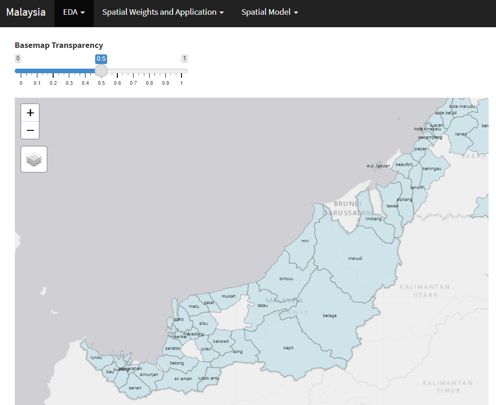
Visualisation with different classification methods
Able to filter based on total crimes, and other types such as rape, murder
Able to filter based on classification methods such as equal, quantile, pretty
Different Colour Schemes, Number of classes, and Transparency are also able to be adjusted
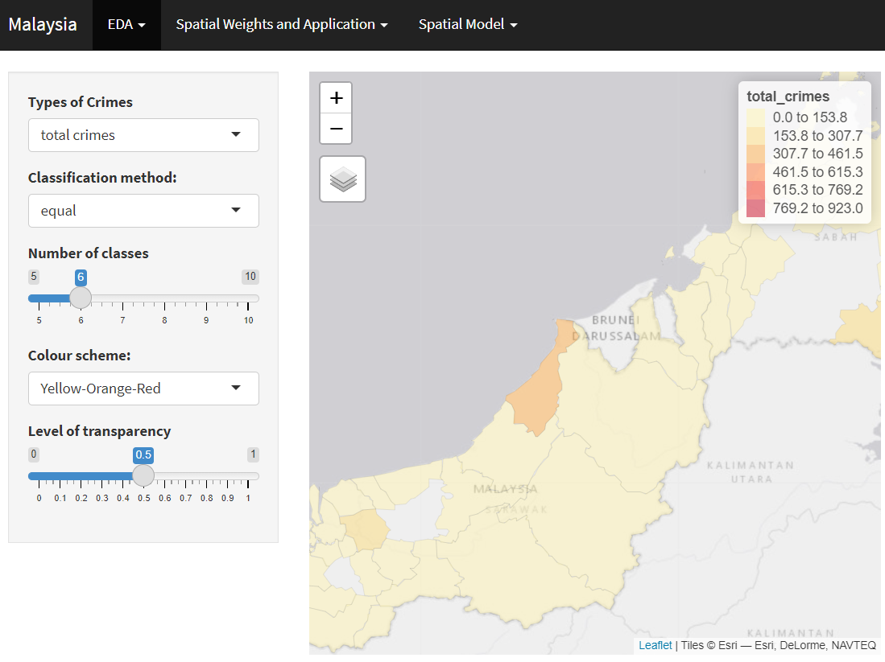
6.0 Spatial Weights and Applications
6.0 Global Measures of Spatial Autocorrelation
wm_q <- poly2nb(msia_total_crimes,
queen = TRUE)Warning in poly2nb(msia_total_crimes, queen = TRUE): some observations have no neighbours;
if this seems unexpected, try increasing the snap argument.Warning in poly2nb(msia_total_crimes, queen = TRUE): neighbour object has 2 sub-graphs;
if this sub-graph count seems unexpected, try increasing the snap argument.summary(wm_q)Neighbour list object:
Number of regions: 48
Number of nonzero links: 152
Percentage nonzero weights: 6.597222
Average number of links: 3.166667
1 region with no links:
48
2 disjoint connected subgraphs
Link number distribution:
0 1 2 3 4 5 6
1 1 12 17 11 4 2
1 least connected region:
8 with 1 link
2 most connected regions:
43 45 with 6 links- If we attempt to use contiguity-based spatial weights to find neighbours, and use the queen method, we come up with a region that is not linked to any neighbours, which is incorrect.
Lets print out the region with the 0 link. It turns out to be “w.p. labuan”.
print(c(msia_total_crimes$ADM1_EN[48], msia_total_crimes$ADM2_EN[48]))[1] "w.p. labuan" "w.p. labuan"Hence, instead of using contiguity-based methods to find neighbours, we need to swap to using distance-based methods instead to find neighbours and do our global spatial autocorrelation.
6.1 Configuring and Binding coordinates
Computing longitude and latitude to achieve coordinates
- longitude
longitude <- map_dbl(msia_total_crimes$geometry, ~st_centroid(.x)[[1]])- latitude
latitude <- map_dbl(msia_total_crimes$geometry, ~st_centroid(.x)[[2]])- bind the coordinates
coords <- cbind(longitude, latitude)head(coords) longitude latitude
[1,] 1022042 590736.6
[2,] 1202703 673828.1
[3,] 1080922 583121.1
[4,] 1298928 602534.3
[5,] 1110762 701440.2
[6,] 1071946 666813.26.2 Computing distance-based neighbours
k1 <- knn2nb(knearneigh(coords))Warning in knn2nb(knearneigh(coords)): neighbour object has 8 sub-graphsk1dists <- unlist(nbdists(k1, coords, longlat = FALSE))
summary(k1dists) Min. 1st Qu. Median Mean 3rd Qu. Max.
18735 31304 40118 44676 50629 111017
This summary report shows that the largest first nearest neighbour distance is 111017 meters (UTM). As dnearneigh accepts meters and we need specify longlat = FALSE, lets round it up to 111100 meters and use this as our upper threshold will ensure us that all regions will at least have 1 neighbour.
6.2.1 Attempting Fixed Distance
- within 111100 meters radius
wm_d111100 <- dnearneigh(coords, 0, 111100, longlat = FALSE)
wm_d111100Neighbour list object:
Number of regions: 48
Number of nonzero links: 318
Percentage nonzero weights: 13.80208
Average number of links: 6.625 n_comp <- n.comp.nb(wm_d111100)
n_comp$nc[1] 1table(n_comp$comp.id)
1
48 Plotting fixed distance weight matrix
# Plot the boundary and neighborhood structures with adjusted limits
plot(msia_total_crimes$geometry, border="lightgrey")
plot(wm_d111100, coords, add=TRUE)
plot(k1, coords, add=TRUE, col="red", length=0.08)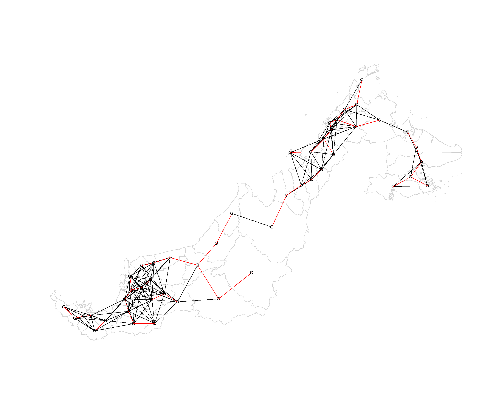
- Plot 1st nearest neighbours (red lines)
# par(mfrow=c(1,2))
plot(msia_total_crimes$geometry, border="lightgrey", main="1st nearest neighbours")
plot(k1, coords, add=TRUE, col="red", length=0.08)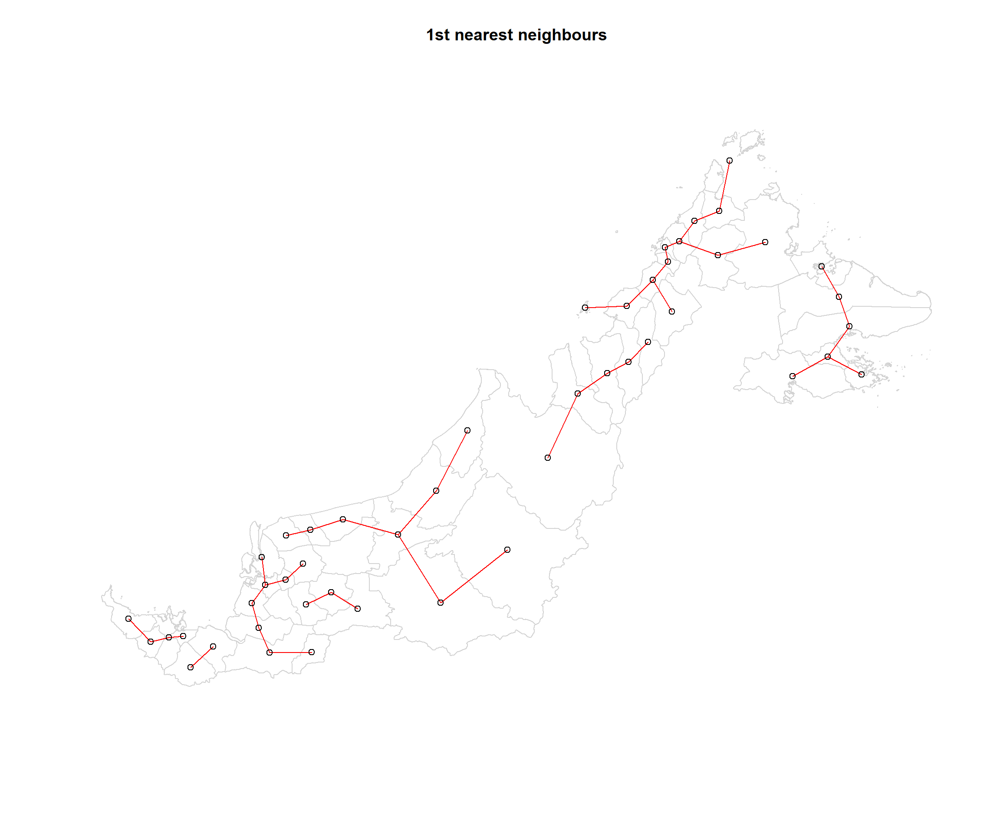
# plot(msia_total_crimes$geometry, border="lightgrey", main="Distance link")
# plot(wm_d111000, coords, add=TRUE, pch = 19, cex = 0.6)6.2.2 Attempting Adaptive Distance
Computing Adaptive Distance Weight matrix
- Lets fix k=6, and no go too far ahead as greater the k, the further the search of neighbours would be.
knn6 <- knn2nb(knearneigh(coords, k=6))
knn6Neighbour list object:
Number of regions: 48
Number of nonzero links: 288
Percentage nonzero weights: 12.5
Average number of links: 6
Non-symmetric neighbours listprint(knn6)Neighbour list object:
Number of regions: 48
Number of nonzero links: 288
Percentage nonzero weights: 12.5
Average number of links: 6
Non-symmetric neighbours liststr(knn6)List of 48
$ : int [1:6] 3 11 12 16 18 48
$ : int [1:6] 5 7 8 13 14 19
$ : int [1:6] 1 6 11 12 16 18
$ : int [1:6] 2 9 10 14 15 17
$ : int [1:6] 6 7 8 12 13 19
$ : int [1:6] 3 5 11 12 13 19
$ : int [1:6] 2 5 6 8 13 19
$ : int [1:6] 2 5 6 7 13 19
$ : int [1:6] 2 4 10 14 15 17
$ : int [1:6] 2 4 9 14 15 17
$ : int [1:6] 1 3 6 12 18 19
$ : int [1:6] 3 5 6 11 13 19
$ : int [1:6] 2 5 6 7 12 19
$ : int [1:6] 2 4 9 10 13 17
$ : int [1:6] 2 4 9 10 14 17
$ : int [1:6] 1 3 18 30 31 48
$ : int [1:6] 3 4 9 10 14 15
$ : int [1:6] 1 3 11 16 30 48
$ : int [1:6] 5 6 7 11 12 13
$ : int [1:6] 29 33 39 40 42 44
$ : int [1:6] 23 28 34 37 45 47
$ : int [1:6] 26 36 40 41 44 46
$ : int [1:6] 21 28 34 37 38 47
$ : int [1:6] 25 27 35 36 38 43
$ : int [1:6] 24 35 36 40 41 43
$ : int [1:6] 27 32 36 41 43 45
$ : int [1:6] 24 26 32 36 43 45
$ : int [1:6] 21 23 27 38 45 47
$ : int [1:6] 20 33 39 40 42 44
$ : int [1:6] 1 3 16 18 31 48
$ : int [1:6] 1 16 18 30 34 48
$ : int [1:6] 22 26 27 36 45 46
$ : int [1:6] 20 29 39 40 42 44
$ : int [1:6] 16 21 23 30 31 37
$ : int [1:6] 24 25 36 38 41 43
$ : int [1:6] 25 26 35 40 41 43
$ : int [1:6] 21 23 30 31 34 47
$ : int [1:6] 24 27 35 36 43 47
$ : int [1:6] 20 29 33 40 42 44
$ : int [1:6] 22 25 26 36 41 46
$ : int [1:6] 22 25 26 36 40 43
$ : int [1:6] 20 22 29 33 39 44
$ : int [1:6] 24 25 26 27 35 36
$ : int [1:6] 22 29 39 40 42 46
$ : int [1:6] 26 27 28 32 36 43
$ : int [1:6] 22 26 32 40 41 44
$ : int [1:6] 23 24 27 28 38 45
$ : int [1:6] 1 11 16 18 30 31
- attr(*, "region.id")= chr [1:48] "1" "2" "3" "4" ...
- attr(*, "call")= language knearneigh(x = coords, k = 6)
- attr(*, "sym")= logi FALSE
- attr(*, "type")= chr "knn"
- attr(*, "knn-k")= num 6
- attr(*, "class")= chr "nb"
- attr(*, "ncomp")=List of 2
..$ nc : int 1
..$ comp.id: int [1:48] 1 1 1 1 1 1 1 1 1 1 ...# table(msia$ADM2_EN, card(knn6))Plotting adaptive distance weight matrix in Shiny
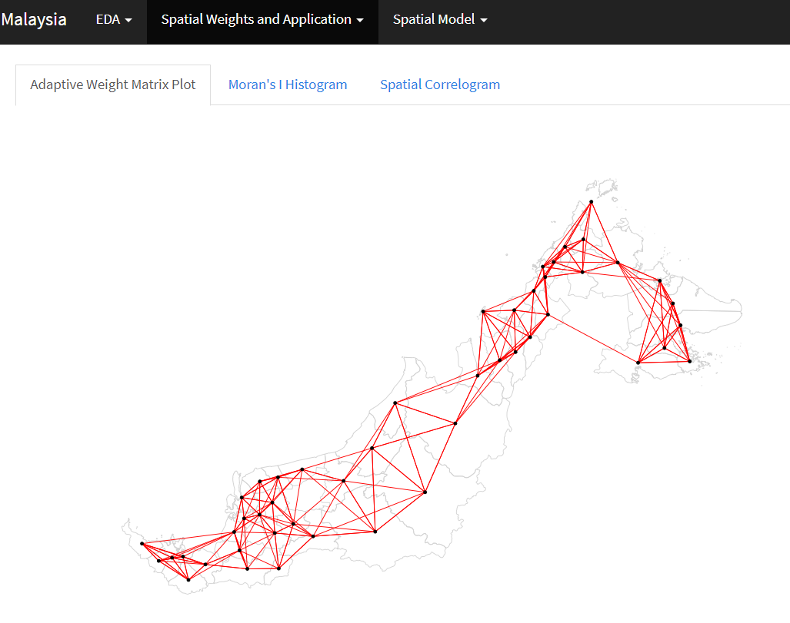
Decision:
Both fixed distance and adaptive distance can be used. However, we need to take note that there are centroids located at the North-East side, on sea instead of on land due to multiple islands.
6.2.3 Global Moran I: Access Spatial Autocorrelation using Adaptive Distance
Next, nb2listw() is used to convert the nb object into spatial weights object.
We should also fix our style=“w”.
rsknn6 <- nb2listw(knn6,
style="W",
zero.policy = TRUE)
rsknn6Characteristics of weights list object:
Neighbour list object:
Number of regions: 48
Number of nonzero links: 288
Percentage nonzero weights: 12.5
Average number of links: 6
Non-symmetric neighbours list
Weights style: W
Weights constants summary:
n nn S0 S1 S2
W 48 2304 48 14.44444 196.61111. Global Moran’s I Test
moran.test(msia_total_crimes$total_crimes,
listw=rsknn6,
zero.policy = TRUE,
na.action=na.omit)
Moran I test under randomisation
data: msia_total_crimes$total_crimes
weights: rsknn6
Moran I statistic standard deviate = -0.0042367, p-value = 0.5017
alternative hypothesis: greater
sample estimates:
Moran I statistic Expectation Variance
-0.021512570 -0.021276596 0.003102251 2. .Computing Monte Carlo Moran’s I
set a seed of 1234
number of simulations = 1000
set.seed(1234)
bperm_moran= moran.mc(msia_total_crimes$total_crimes,
listw=rsknn6,
nsim=999,
zero.policy = TRUE,
na.action=na.omit)
bperm_moran
Monte-Carlo simulation of Moran I
data: msia_total_crimes$total_crimes
weights: rsknn6
number of simulations + 1: 1000
statistic = -0.021513, observed rank = 588, p-value = 0.412
alternative hypothesis: greatermoran I statistic: -0.021513 < 0 show signs of regularity, however weak.
p-value = 0.412 > 0.05, at the 95% confidence interval, we fail to reject the null hypothesis (which assumes spatial randomness), meaning to say that we do not have enough evidence to conclude that there is significant spatial autocorrelation and clustering.
Hence, we accept null hypothesis (h0), and conclude that the result is not statistically significant, suggesting that the observed spatial pattern could be due to spatial randomness.
3. Visualising Monte Carlo Moran’s I using Shiny
Computing some basic statistics
#compute mean
mean(bperm_moran$res[1:999])[1] -0.02278863cat('\n')#compute variance
var(bperm_moran$res[1:999])[1] 0.003210544cat('\n')#summary bperm
summary(bperm_moran$res[1:999]) Min. 1st Qu. Median Mean 3rd Qu. Max.
-0.132251 -0.062097 -0.033119 -0.022789 0.003581 0.298735 - plotting histogram using ggplot2 in Shiny
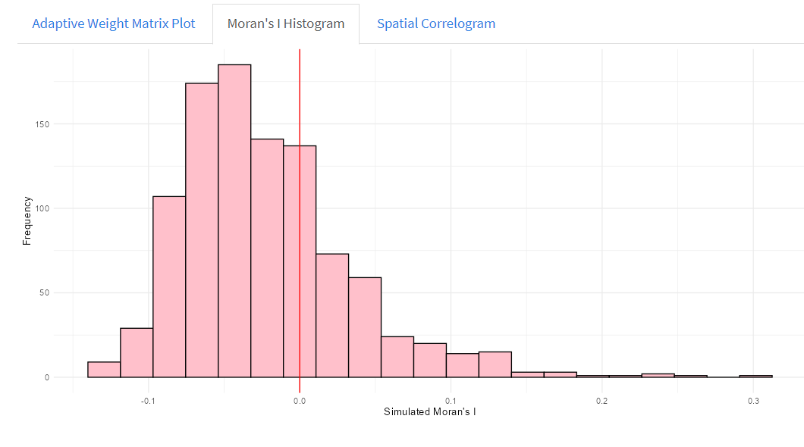
6.3 Spatial Correlogram
Compute Moran’s I Spatial Correlogram
In the code chunk below, sp.correlogram() of spdep package is used to compute a 6-lag spatial correlogram of GDPPC. The global spatial autocorrelation used in Moran’s I. The plot() of base Graph is then used to plot the output.
MI_corr <- sp.correlogram(knn6,
msia_total_crimes$total_crimes,
order=6, #lag-value: 6
method="I",
style="W",
zero.policy = TRUE)
plot(MI_corr)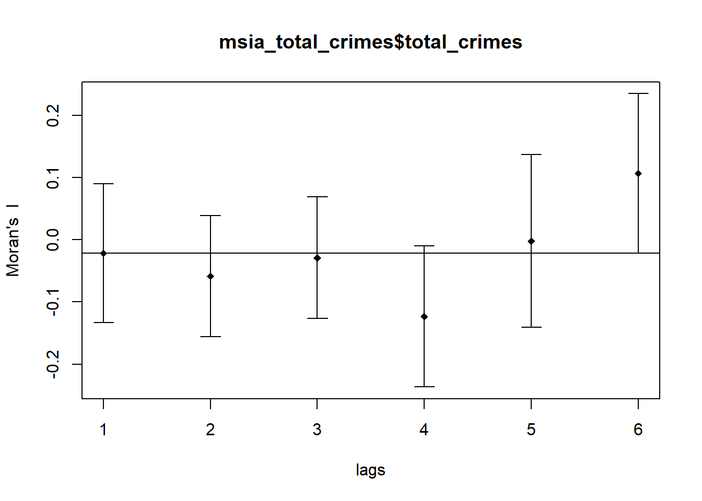
- Looking at the first lag, it is close to 0, showing signs of randomness. This suggests that the total crimes of Thailand does not have spatial dependence. the following lags after shows negative Moran I, showing signs of regular patterns amongst 2nd order neighbours and below.
By plotting the output might not allow us to provide complete interpretation. This is because not all autocorrelation values are statistically significant. Hence, it is important for us to examine the full analysis report by printing out the analysis results as in the code chunk below.
print(MI_corr)Spatial correlogram for msia_total_crimes$total_crimes
method: Moran's I
estimate expectation variance standard deviate Pr(I) two sided
1 (48) -0.0215126 -0.0212766 0.0031023 -0.0042 0.99662
2 (48) -0.0583456 -0.0212766 0.0023656 -0.7622 0.44597
3 (48) -0.0289484 -0.0212766 0.0023930 -0.1568 0.87538
4 (48) -0.1233814 -0.0212766 0.0032051 -1.8035 0.07130 .
5 (48) -0.0018402 -0.0212766 0.0048057 0.2804 0.77919
6 (48) 0.1067613 -0.0212766 0.0041123 1.9966 0.04587 *
---
Signif. codes: 0 '***' 0.001 '**' 0.01 '*' 0.05 '.' 0.1 ' ' 17.0 Local Measures of Spatial Autocorrelation
We need to use fixed-distance and adaptive-distance based methods for more reliable results.
- Local Moran’s I: Detect local clusters (high-high and low-low) and local outliers (high-low, low-high)
7.1 Adaptive Distance Weight Matrix
- stick to k=6, style=‘W’
knn6 <- knn2nb(knearneigh(coords, k=6))
knn6Neighbour list object:
Number of regions: 48
Number of nonzero links: 288
Percentage nonzero weights: 12.5
Average number of links: 6
Non-symmetric neighbours listNext, nb2listw() is used to convert the nb object into spatial weights object.
knn6_lw <- nb2listw(knn6, style = 'W')
summary(knn6_lw)Characteristics of weights list object:
Neighbour list object:
Number of regions: 48
Number of nonzero links: 288
Percentage nonzero weights: 12.5
Average number of links: 6
Non-symmetric neighbours list
Link number distribution:
6
48
48 least connected regions:
1 2 3 4 5 6 7 8 9 10 11 12 13 14 15 16 17 18 19 20 21 22 23 24 25 26 27 28 29 30 31 32 33 34 35 36 37 38 39 40 41 42 43 44 45 46 47 48 with 6 links
48 most connected regions:
1 2 3 4 5 6 7 8 9 10 11 12 13 14 15 16 17 18 19 20 21 22 23 24 25 26 27 28 29 30 31 32 33 34 35 36 37 38 39 40 41 42 43 44 45 46 47 48 with 6 links
Weights style: W
Weights constants summary:
n nn S0 S1 S2
W 48 2304 48 14.44444 196.6111Here, we can see that all 48 districts in East Malaysia have exactly 6 links.
7.2 LISA
7.2.1 Computing Local Moran’s I
fips <- order(msia_total_crimes$ADM2_EN)
localMI <- localmoran(msia_total_crimes$total_crimes, knn6_lw)
head(localMI) Ii E.Ii Var.Ii Z.Ii Pr(z != E(Ii))
1 0.037083313 -2.760985e-03 1.963267e-02 0.2843652 0.7761305
2 0.022077090 -4.038567e-04 2.878511e-03 0.4190160 0.6752044
3 0.000755672 -3.059263e-07 2.181387e-06 0.5118501 0.6087559
4 -0.058333845 -1.283716e-03 9.141703e-03 -0.5966822 0.5507196
5 -0.046361434 -1.581031e-03 1.125562e-02 -0.4220884 0.6729605
6 -0.221639474 -9.445948e-02 6.099152e-01 -0.1628486 0.8706376printCoefmat(data.frame(
localMI[fips,],
row.names=msia_total_crimes$ADM2_EN[fips]),
check.names=FALSE) Ii E.Ii Var.Ii Z.Ii Pr.z....E.Ii..
bau -2.7246e-01 -2.5582e-03 1.8194e-02 -2.0010e+00 0.0454
beaufort 3.7083e-02 -2.7610e-03 1.9633e-02 2.8437e-01 0.7761
belaga -1.5997e-02 -5.3574e-03 3.7996e-02 -5.4584e-02 0.9565
beluran 2.2077e-02 -4.0386e-04 2.8785e-03 4.1902e-01 0.6752
betong 1.4789e-01 -2.5582e-03 1.8194e-02 1.1154e+00 0.2647
bintulu -3.8866e-02 -3.3160e-03 2.3566e-02 -2.3158e-01 0.8169
dalat 1.1819e-01 -6.4124e-03 4.5430e-02 5.8461e-01 0.5588
daro 1.2226e-01 -8.2617e-03 5.8423e-02 5.3998e-01 0.5892
julau 8.6043e-02 -5.6492e-03 4.0053e-02 4.5816e-01 0.6468
kanowit 1.0151e-01 -6.2559e-03 4.4328e-02 5.1186e-01 0.6088
kapit 1.6389e-01 -4.6619e-03 3.3086e-02 9.2662e-01 0.3541
keningau 7.5567e-04 -3.0593e-07 2.1814e-06 5.1185e-01 0.6088
kinabatangan -5.8334e-02 -1.2837e-03 9.1417e-03 -5.9668e-01 0.5507
kota belud -4.6361e-02 -1.5810e-03 1.1256e-02 -4.2209e-01 0.6730
kota kinabalu -2.2164e-01 -9.4459e-02 6.0992e-01 -1.6285e-01 0.8706
kota marudu -3.0061e-02 -1.8243e-03 1.2984e-02 -2.4780e-01 0.8043
kuching -1.1488e+00 -6.6699e-01 1.5838e+00 -3.8287e-01 0.7018
kudat -3.7580e-02 -2.4597e-03 1.7495e-02 -2.6552e-01 0.7906
kunak -1.1913e-01 -4.1402e-03 2.9399e-02 -6.7066e-01 0.5024
lahad datu 2.7014e-02 -5.3680e-04 3.8256e-03 4.4544e-01 0.6560
lawas 1.3462e-01 -4.1402e-03 2.9399e-02 8.0928e-01 0.4184
limbang 1.6251e-01 -4.7971e-03 3.4041e-02 9.0681e-01 0.3645
lubok antu 1.9112e-01 -4.1402e-03 2.9399e-02 1.1388e+00 0.2548
lundu -3.1264e-01 -3.3018e-03 2.3466e-02 -2.0194e+00 0.0434
marudi -9.5697e-04 -1.3551e-03 9.6497e-03 4.0534e-03 0.9968
matu 1.1176e-01 -8.2617e-03 5.8423e-02 4.9654e-01 0.6195
meradong 9.4401e-02 -3.7693e-03 2.6776e-02 5.9995e-01 0.5485
miri -4.7316e-01 -5.2294e-02 3.5338e-01 -7.0798e-01 0.4790
mukah 9.0316e-02 -3.4158e-03 2.4273e-02 6.0162e-01 0.5474
papar 1.9145e-02 -1.7785e-04 1.2679e-03 5.4265e-01 0.5874
penampang 5.6857e-02 -1.7516e-03 1.2468e-02 5.2489e-01 0.5997
ranau -8.0554e-02 -2.8653e-03 2.0372e-02 -5.4430e-01 0.5862
samarahan 3.2757e-01 -5.5206e-03 3.9147e-02 1.6835e+00 0.0923
sandakan -1.7404e-02 -9.9733e-03 7.0405e-02 -2.8003e-02 0.9777
saratok 2.1459e-01 -5.3574e-03 3.7996e-02 1.1284e+00 0.2592
sarikei 7.2759e-02 -3.4158e-03 2.4273e-02 4.8893e-01 0.6249
semporna 4.1985e-02 -1.6702e-03 1.1890e-02 4.0036e-01 0.6889
serian -2.7855e-02 -2.8587e-05 2.0383e-04 -1.9490e+00 0.0513
sibu -7.1929e-01 -3.6978e-02 2.5392e-01 -1.3541e+00 0.1757
simunjan -3.8169e-01 -4.5286e-03 3.2144e-02 -2.1037e+00 0.0354
sipitang 1.5227e-01 -5.7979e-03 4.1102e-02 7.7967e-01 0.4356
song 9.1833e-02 -5.6492e-03 4.0053e-02 4.8708e-01 0.6262
sri aman 1.1517e-01 -1.4285e-03 1.0171e-02 1.1562e+00 0.2476
tatau 1.8568e-01 -6.1013e-03 4.3240e-02 9.2231e-01 0.3564
tawau 6.4647e-02 -1.6482e-02 1.1559e-01 2.3863e-01 0.8114
tenom 8.8173e-02 -3.5317e-03 2.5094e-02 5.7891e-01 0.5626
tuaran -9.6729e-02 -2.9715e-03 2.1125e-02 -6.4507e-01 0.5189
w.p. labuan 2.4793e-02 -1.0533e-04 7.5099e-04 9.0855e-01 0.36367.2.2 Mapping local Moran’s I
Append to local Moran’s I dataframe
msia_total_crimes.localMI <- cbind(msia_total_crimes,localMI) %>%
rename(Pr.Ii = Pr.z....E.Ii..)Visualising local Moran’s I statistic values and p-values
localMI_statistic.map <- tm_shape(msia_total_crimes.localMI) +
tm_fill(col = "Ii",
style = "pretty",
title = "local Moran's I statistic") +
tm_borders(alpha = 0.5) +
tm_layout(
main.title = "local Moran's I statistic",
main.title.size = 1,
main.title.position = "center")
localMI_pvalues.map <- tm_shape(msia_total_crimes.localMI) +
tm_fill(col = "Pr.Ii",
breaks=c(-Inf, 0.001, 0.01, 0.05, 0.1, Inf),
palette="-Blues",
title = "local Moran's I p-values") +
tm_borders(alpha = 0.5) +
tm_layout(
main.title = "local Moran's I p-values",
main.title.size = 1,
main.title.position = "center")
tmap_arrange(localMI_statistic.map, localMI_pvalues.map, asp=1, ncol=2)Variable(s) "Ii" contains positive and negative values, so midpoint is set to 0. Set midpoint = NA to show the full spectrum of the color palette.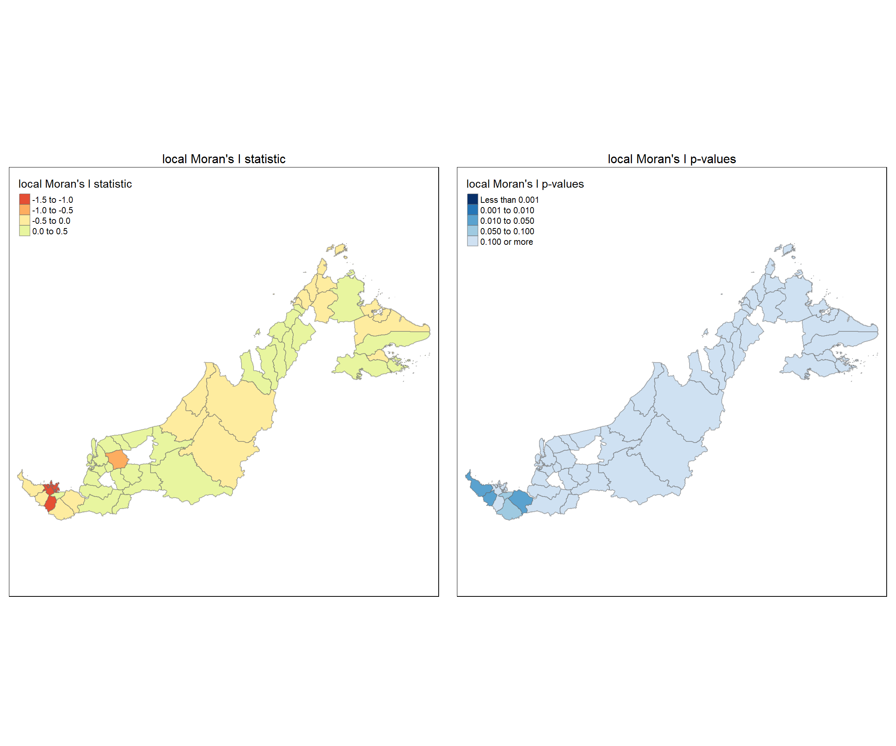
write to rds so that can be read in the ShinyApp file.
write_rds(localMI_statistic.map, "data/rds/localMI_statistic.map.rds")
write_rds(localMI_pvalues.map, "data/rds/localMI_pvalues.map.rds")7.3 Creating LISA Cluster Map
- In the Shiny App, under Local Measures tab, the following screenshot depicts selection between Moran Scatterplot and Moran Scatterplot with Standardized variable
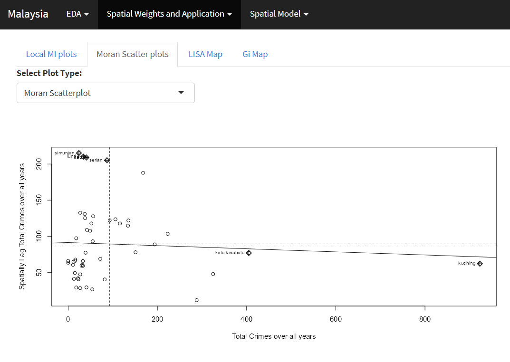
7.3.1 Plotting Moran scatterplot
nci <- moran.plot(msia_total_crimes$total_crimes, knn6_lw,
labels=as.character(msia_total_crimes$ADM2_EN),
xlab="Total Cases over all years",
ylab="Spatially Lag Total Cases over all years")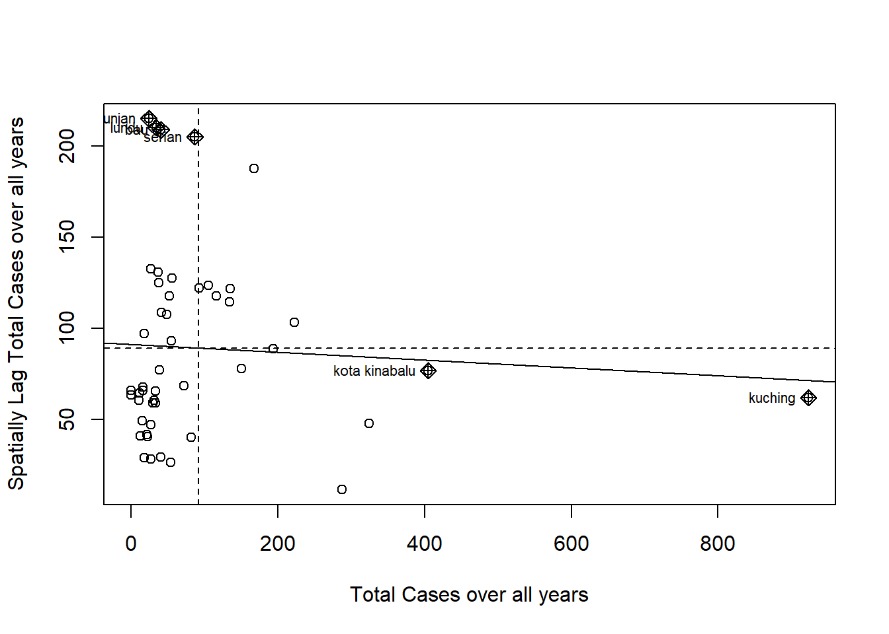
7.3.2 Plotting Moran scatterplot with standardized variable
msia_total_crimes$Z.total_crimes<- scale(msia_total_crimes$total_crimes) %>%
as.vector nci2 <- moran.plot(msia_total_crimes$total_crimes, knn6_lw,
labels=as.character(msia_total_crimes$ADM2_EN),
xlab="z- Total Cases over all years",
ylab="Spatially Lag z- Total Cases over all years")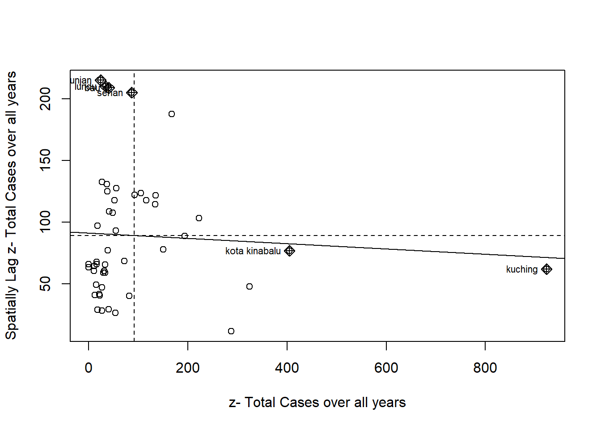
7.3.3 LISA map classes
quadrant <- vector(mode="numeric",length=nrow(localMI))
msia_total_crimes$lag_total_crimes <- lag.listw(knn6_lw, msia_total_crimes$total_crimes)
DV <- msia_total_crimes$lag_total_crimes - mean(msia_total_crimes$lag_total_crimes)
LM_I <- localMI[,1] - mean(localMI[,1])
signif <- 0.05
quadrant[DV <0 & LM_I>0] <- 1
quadrant[DV >0 & LM_I<0] <- 2
quadrant[DV <0 & LM_I<0] <- 3
quadrant[DV >0 & LM_I>0] <- 4
quadrant[localMI[,5]>signif] <- 07.3.4 Plotting LISA map
- In Shiny: LISA Map
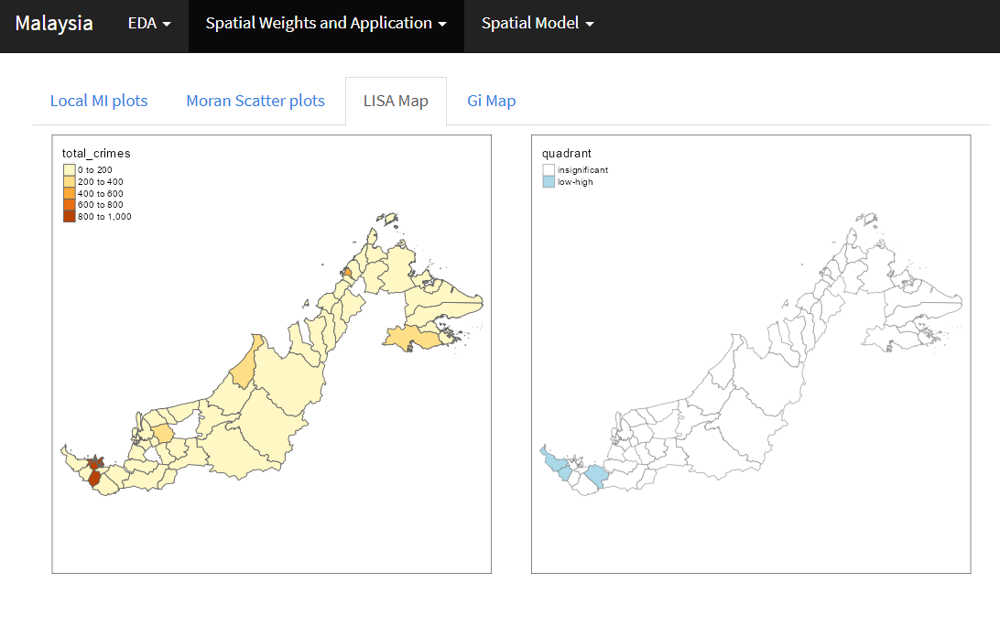
#|fig-width: 12
#|fig-height: 10
total_crimes <- qtm(msia_total_crimes, "total_crimes")
msia_total_crimes.localMI$quadrant <- quadrant
colors <- c("#ffffff", "#2c7bb6", "#abd9e9", "#fdae61", "#d7191c")
clusters <- c("insignificant", "low-low", "low-high", "high-low", "high-high")
LISAmap <- tm_shape(msia_total_crimes.localMI) +
tm_fill(col = "quadrant",
style = "cat",
palette = colors[c(sort(unique(quadrant)))+1],
labels = clusters[c(sort(unique(quadrant)))+1],
popup.vars = c("")) +
tm_view(set.zoom.limits = c(11,17)) +
tm_borders(alpha=0.5)
tmap_arrange(total_crimes, LISAmap,
asp=1, ncol=2)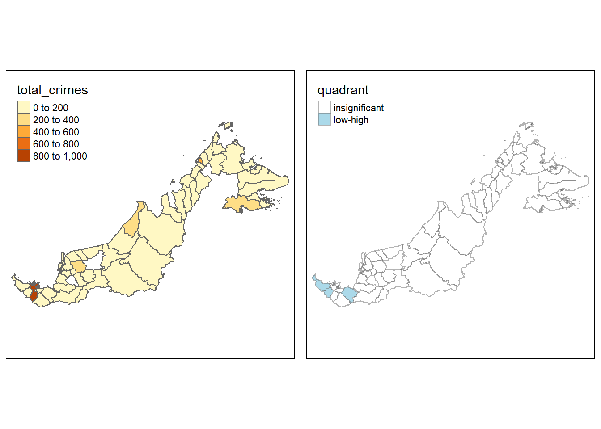
outliers_hotspots <- msia_total_crimes.localMI %>%
filter(quadrant %in% c(1, 2, 3, 4)) %>%
mutate(cluster = case_when(
quadrant == 1 ~ "Low-Low (Hotspot)",
quadrant == 2 ~ "Low-High (Outlier)",
quadrant == 3 ~ "High-Low (Outlier)",
quadrant == 4 ~ "High-High (Hotspot)",
TRUE ~ "Insignificant" # Just a fallback, should not occur
))
# Print the results
print(outliers_hotspots[, c("ADM1_EN", "quadrant", "cluster")])Simple feature collection with 3 features and 3 fields
Geometry type: MULTIPOLYGON
Dimension: XY
Bounding box: xmin: 337381.7 ymin: 108268.9 xmax: 514052.4 ymax: 227502.6
Projected CRS: WGS 84 / UTM zone 49N
ADM1_EN quadrant cluster geometry
20 sarawak 2 Low-High (Outlier) MULTIPOLYGON (((406897.6 13...
33 sarawak 2 Low-High (Outlier) MULTIPOLYGON (((387584.1 18...
44 sarawak 2 Low-High (Outlier) MULTIPOLYGON (((474075.3 17...7.4 Computing Gi Statistics (total cases over the years)
Next, we need to perform Gi Statistics, for each fixed distance and adaptive distances. The computed Gi statistic will give us a representation of a Z-score. Greater local Gi represent a greater intensity of clustering and the direction (positive or negative) indicates high or low clusters.
7.4.1 Gi statistics for adaptive distance
fips <- order(msia_total_crimes$ADM2_EN)
gi.adaptive <- localG(msia_total_crimes$total_crimes, knn6_lw)
msia_total_crimes.gi <- cbind(msia_total_crimes, as.matrix(gi.adaptive)) %>%
rename(gstat_adaptive = as.matrix.gi.adaptive.)
# Find the threshold for hotspot areas (e.g., top 5% of Gi scores)
threshold <- quantile(msia_total_crimes.gi$gstat_adaptive, 0.95)
hotspots <- msia_total_crimes.gi %>%
filter(gstat_adaptive >= threshold)hotspots_province_gstatscore <- hotspots %>%
select(ADM2_EN, gstat_adaptive) %>%
arrange(desc(gstat_adaptive))
print(hotspots_province_gstatscore)Simple feature collection with 3 features and 2 fields
Geometry type: MULTIPOLYGON
Dimension: XY
Bounding box: xmin: 337381.7 ymin: 108268.9 xmax: 514052.4 ymax: 227502.6
Projected CRS: WGS 84 / UTM zone 49N
ADM2_EN gstat_adaptive geometry
1 simunjan 2.103660 MULTIPOLYGON (((474075.3 17...
2 lundu 2.019375 MULTIPOLYGON (((387584.1 18...
3 bau 2.000985 MULTIPOLYGON (((406897.6 13...7.4.2 Plotting and Mapping Gi values with adaptive distance weights
- In Shiny: Gi Map
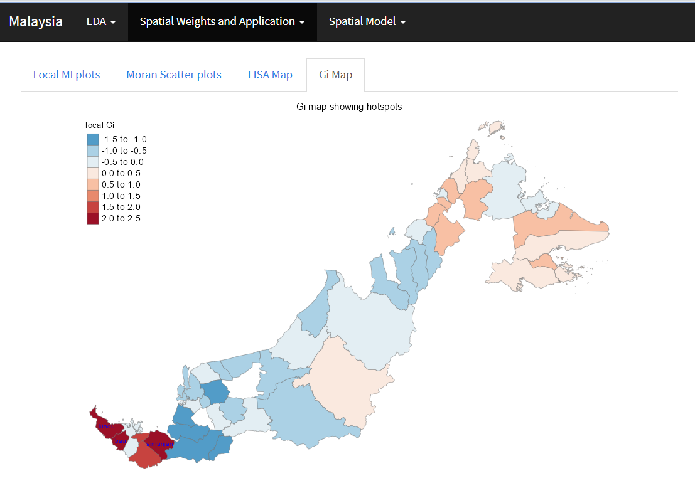
Gimap <- tm_shape(msia_total_crimes.gi) +
tm_fill(col = "gstat_adaptive",
style = "pretty",
palette="-RdBu",
title = "local Gi") +
tm_borders(alpha = 0.5) +
tm_shape(hotspots) +
tm_text("ADM2_EN", size = 0.7, col="blue") +
tm_layout(
main.title = "Gi map showing hotspots",
main.title.size = 1,
main.title.position = "center",
legend.show = TRUE,
legend.text.size = 1, # Reduce the text size
frame = FALSE)
Gimap Variable(s) "gstat_adaptive" contains positive and negative values, so midpoint is set to 0. Set midpoint = NA to show the full spectrum of the color palette.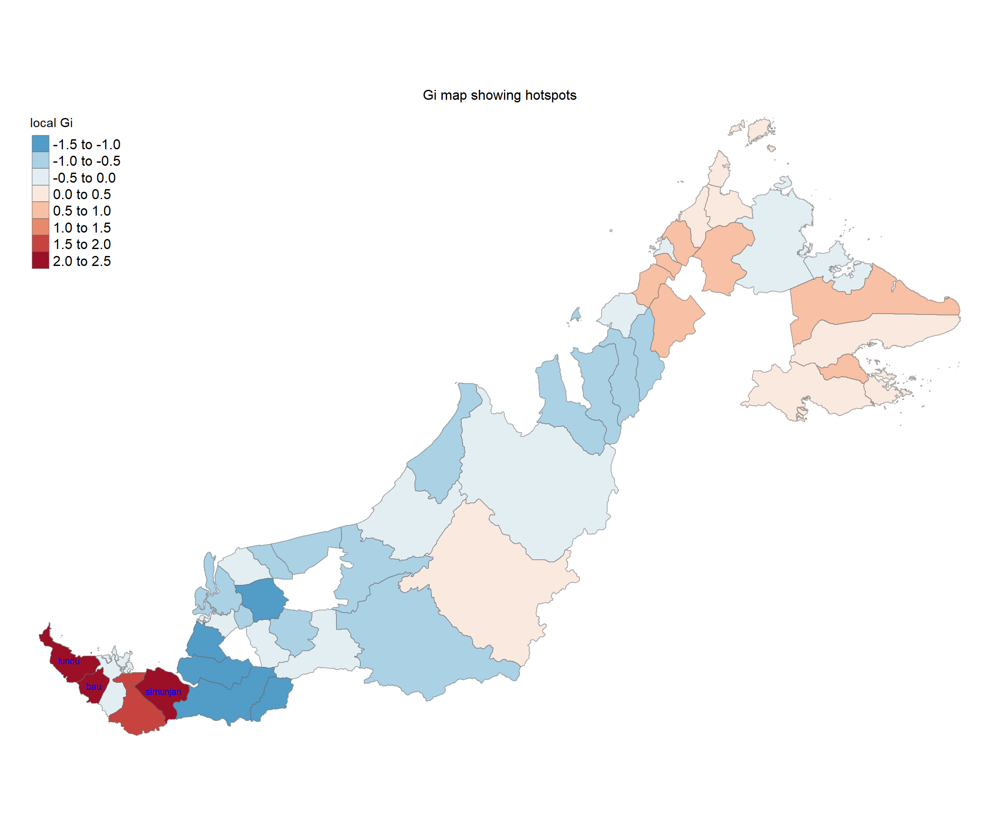
Similarly, what inference can we draw from the adaptive-based plot?
- Two hotspots (red) are identified in East Malaysia, with both hotspots located around the central region. These hotspots comprise the provinces of Simunjan, Lundu, and Bau, with gstat_adaptive scores ranging from approximately 2.00 to 2.10. This suggests these provinces have higher case concentrations compared to their neighbors, indicating positive spatial clustering.